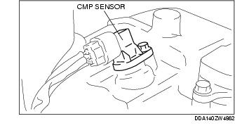

Camshaft position (CMP) sensor removal/installation [ZY]
- • When replacing the CKP sensor, make sure there is no foreign material on it such as metal shavings. If it is installed with foreign material, the sensor output signal will malfunction resulting from fluctuation in magnetic flux and cause a deterioration in engine control.
1. Disconnect the negative battery cable.
2. Remove the CMP sensor.

3. Verify that the O-ring is not damaged.
4. Apply a small amount of clean oil to the O-ring and the head cover.
5. Install in the reverse order of removal.
CMP sensor tightening torque